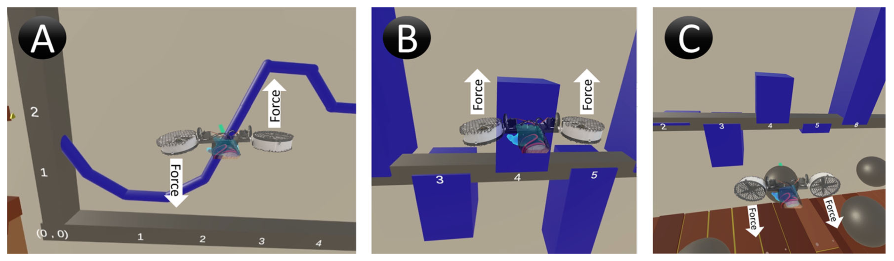

Touching Data with PropellerHand

Authors. Alexander Achberger, Frank Heyen, Kresimir Vidackovic, Michael Sedlmair
Venue. Journal of Visualization (2022) Full Paper
Type. Full Paper
Abstract. Immersive analytics often takes place in virtual environments which promise the users immersion. To fulfill this promise, sensory feedback, such as haptics, is an important component, which is however not well supported yet. Existing haptic devices are often expensive, stationary, or occupy the user’s hand, preventing them from grasping objects or using a controller. We propose PropellerHand, an ungrounded hand-mounted haptic device with two rotatable propellers, that allows exerting forces on the hand without obstructing hand use. PropellerHand is able to simulate feedback such as weight and torque by generating thrust up to 11 N in 2-DOF and a torque of 1.87 Nm in 2-DOF. Its design builds on our experience from quantitative and qualitative experiments with different form factors and parts. We evaluated our prototype through a qualitative user study in various VR scenarios that required participants to manipulate virtual objects in different ways, while changing between torques and directional forces. Results show that PropellerHand improves users’ immersion in virtual reality. Additionally, we conducted a second user study in the field of immersive visualization to investigate the potential benefits of PropellerHand there.
Acknowledgements. Partially supported by the Deutsche Forschungsgemeinschaft (DFG, German Research Foundation) under Germanys Excellence Strategy – EXC 2120/1 – 390831618